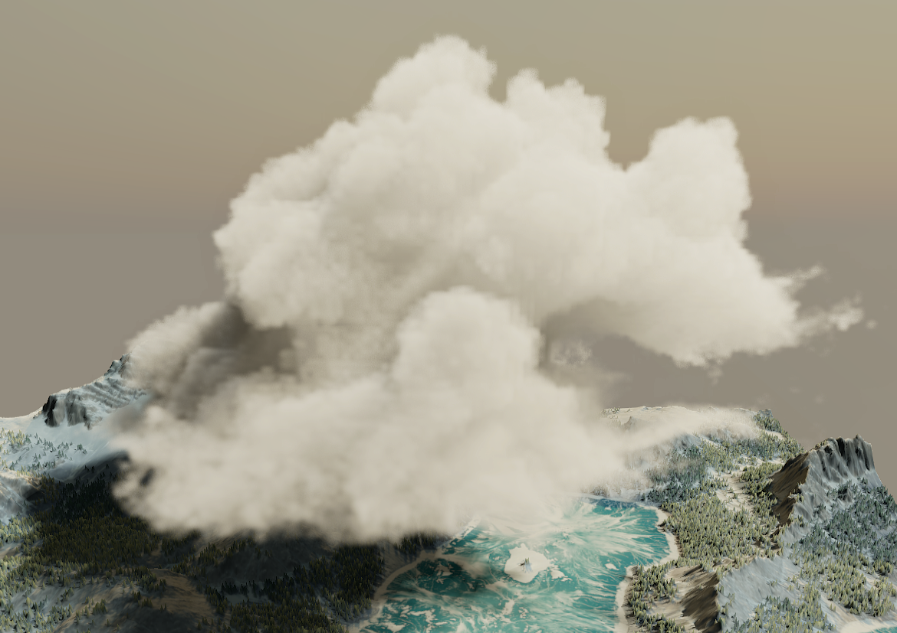

Overview
For BUAS Y2 block B, I did a research project.
For this project I chose to create a volumetric renderer, since I was very interested in
how they work and their pretty results.
For this project I did a lot of research into different techniques, and ended up writing
a technical article that explains the specifics.
 Source
Source
